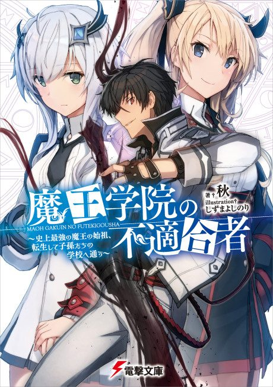

Light novel continues fromVol. 7
Anime
Light novel continues fromVol. 7
Anime
Light novelThe Misfit of Demon King Academy: History’s Strongest Demon King Reincarnates and Goes to School with His Descendants
魔王学院の不適合者 ～史上最強の魔王の始祖、転生して子孫たちの学校へ通う～
AniList7.2
Animeter—
3 seasons37 ep
SourceVol. 7
Anime finished. Where does the story go next?
Start at Volume7
Season 2 Part 2 adapts through light novel 6 (per site numbering); start at novel 7.
1622 end
The Misfit of Demon King Academy II (Cour 2)Start reading here
More like The Misfit of Demon King Academy: History’s Strongest Demon King Reincarnates and Goes to School with His Descendants
 Unclear7.9
Unclear7.9
 Manga Ch. 2157.7
Manga Ch. 2157.7
 Manga Vol. 47.2
Manga Vol. 47.2
 Original7.3
Original7.3
 Manga Ch. 757.6
Manga Ch. 757.6
 Manga Ch. 1118.0
Manga Ch. 1118.0